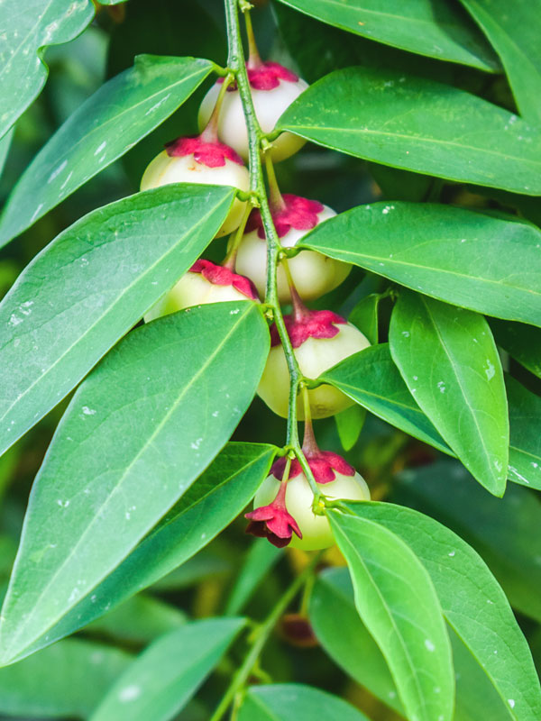

Botanical Name
Sauropus androgynus
Common Names
- Kannada: Chakraani, Chakramuni
- Malayalam: Madhuracheera
- Tamil: Pallikkarputu
- English: Vitamin Plant
Properties
- Rasa: Tikta (Bitter), Kashaya (Astringent)
- Guna: Laghu (Light), Ruksha (Dry), Tikshna (Sharp)
- Veerya: Ushna (Hot)
- Vipaka: Katu (Pungent)
- Karma: Kapha, Vata
- Prabhava: Habit - Shrub
Identification
- Leaf: Simple, Ovate, Foliar Apex is Acuminate, Foliar Base is Cuneate
- Flower: Unisexual, 2-4 cm long, Red, 5-20 Stamen, Flowers Season is June - August
Parts Used
Leaves
Chemical Composition
Adenosine, deoxy, methylsulphinyl‐adenosine, and uridine, two flavonol dioside, β‐D‐glucosyl, Rhamnosyl‐kaempferol, glucosyl, glucosyl‐kaempferol, and one rare flavonol trioside, glucosyl, glucosyl, rhamno‐syl‐kaempferol
Uses
- Coughs
- Lungs problems
- Fever
- Urinary problems
- Relieve congestion
- Eye infections
- Erythema
- Measles
- Dysuria
Dosage
- Leaf juice: 10-15 ml
- Powder: 2-4 g
- Decoction: 50-100 ml